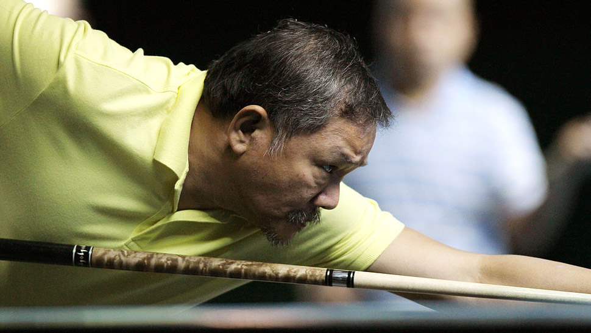

|
Good News
|

3 Filipino engineers behind Philippines' second cube satellite
The Maya-2 CubeSat, developed by three Filipino engineers, was officially launched at the International Space Station on Sunday afternoon
|

Metro Manila, rest of country to have cloudy skies, isolated rains due to easterlies
The easterlies or winds from the east will bring partly cloudy to cloudy skies with isolated rain showers or thunderstorms over Metro Manila
|

China and Russia to launch lunar space station
MOSCOW — Russia and China unveiled plans Tuesday for a joint lunar space station, as Moscow seeks to recapture the glory of its space pioneering days.
|
|
Showbiz
|

Derek Ramsay, Ellen Adarna, kinumpirma na ang kanilang relasyon--PEP report
Makalipas ang ilang linggong pagpo-post ng mga larawan na magkasama, kinumpirma na nina Derek Ramsay at Ellen Adarna ang kanilang relasyon.
|

Katrina Halili, wala na nga bang balak na makipagrelasyon muli?
Taong 2014 nang aminin ni Katrina Halili ang breakup nila ni Kris Lawrence. Simula noon, wala nang lalaking na-link sa aktres.
|

Richard Yap, inihayag kung bakit niya piniling maging Kapuso
Naging matapat ang mga sagot ni Richard Yap sa bawat tanong sa kaniya tungkol sa dahilan kung bakit siya lumipat sa GMA-7.
|
|
Sports
|

Efren 'Bata' Reyes apologizes for breach of protocols in billiards event he attended
Efren "Bata" Reyes has apologized for the breach of health and safety protocols in the billiards event he attended last week.
|

Overseas fans barred from Tokyo Olympics over virus fears
Overseas fans will be banned from this summer's pandemic-delayed Tokyo Olympics, organizers said Saturday.
|

Spurs continue to dominate East, hold off Cavs rally
Keldon Johnson collected 23 points and a career-high 21 rebounds to lift the visiting San Antonio Spurs to a 116-110 victory over the Cleveland Cavaliers on Friday.
|